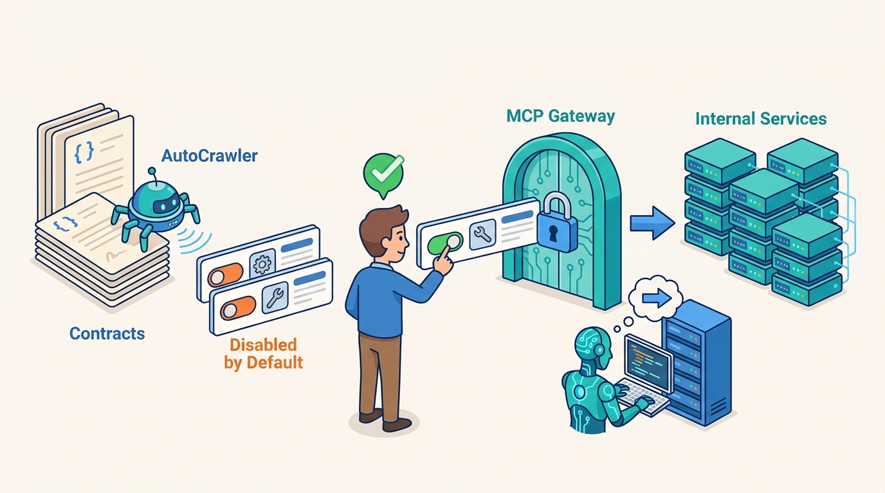

Part II — GATEWAYS: Agnostic Building Blocks
The MCP Gateway: Every Internal Service One Tool Call Away

Image generated by Google Gemini (gemini-3-pro-image-preview)
Part II — GATEWAYS: Agnostic Building Blocks

Image generated by Google Gemini (gemini-3-pro-image-preview)